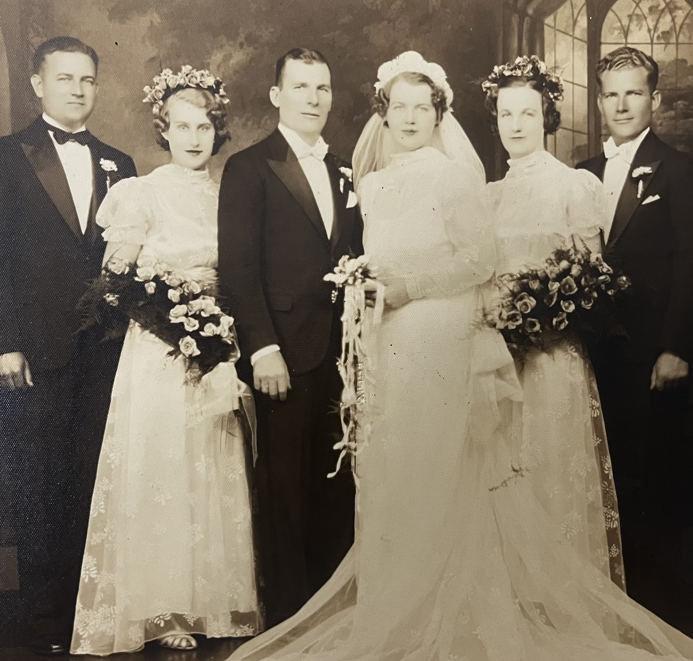

The 'Why' behind this site
As the family expanded, I wanted a good way to access the history of our family with our most important photos and stories.
This site will have pages for Rob and Sherry and each of their kids. There are so many family stories that shouldn't be lost. It is my hope that these pages will also contain a method for each of us to add new stories for our family to remember.
Example of what this site will have
This is a great example.
I was told as a 9-year old, that my Dad, my Italian Dad, really wasn't my father. But Mom wasn't known for her honesty, so I chose to only believe it when it was convenient. At age 12, after the death of my step-father, I tried to contact my Polish dad only to find that he had recently died. And I was told to NEVER contact the family again.
Eventually I verified who I was by getting a DNA test.
To my surprise, Mom had told the truth, I was half Polish and not half Italian. And to add to that, the names the DNA test showed were related to me, were ones that I could find. Over the next few years I located my brothers and sister. I wrote to the eldest several times. But I don't remember ever being brave enough to send the letters.
Then my foster brother started talking about meeting his Bio-family, and I felt the need to know.
Over Christmas, I broke down and used Facebook to finally message my youngest sisters. No response.
So I decided to try email... and she responded.
Fast forward several months and my wife and I ended up flying to Florida to meet my cousin and aunt. They were so gracious! We spent a day visiting them and loved being part of a new family. The next morning as we prepared to leave, I was given a set of gifts from my family. One of which is this original photo of my grandparents getting married.
